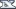

System Snapshot
This modules lets you take a snapshot of the current database. This may be very helpful for a network migration for example, as you can go back in time and examine your network prior any changes
In addition you can import a NeDi database from a completely different network for review, without affecting your "real" data.
Adding a Snapshot
- Enter a suffix to identify your snapshot. By default a timestamp is filled in.
- Provide DB admin user (usually root) and password.
- Click the "Add" button to copy the current database to the snapshot (might take a while).
Activating a Snapshot
- The database used in the current session is indicated by
 .
.
- Click on in the snapshot list to activate either the main database or a snapshot.
- The  logo on the top left is replaced by
 to remind you, that you're working in a snapshot now. Hover over it to reveal which one.
to remind you, that you're working in a snapshot now. Hover over it to reveal which one.
- Alarm sounds and rrdgraphs are turned off as well to avoid any confusion until you select the main database again (usually 'nedi').
- You can manipulate data in a snapshot, but it won't have an effect on the current database, since the discovery keeps using the main database.
- This applies for importing a DB with System-Files as well, meaning you can actually import a completely different database
Deleting a Snapshot
- Click on to delete a snapshot (only shown on inactive snapshots).
- After confirmation the snapshot will be deleted and its diskspace freed up.
 NeDi Help
NeDi Help